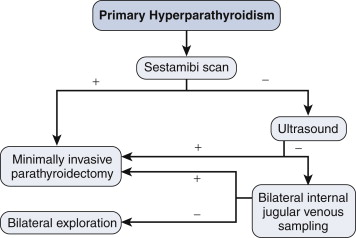
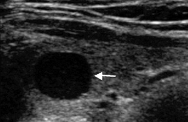
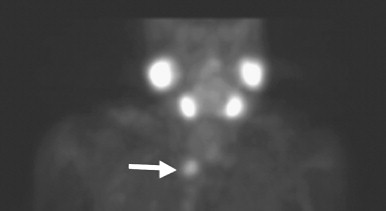
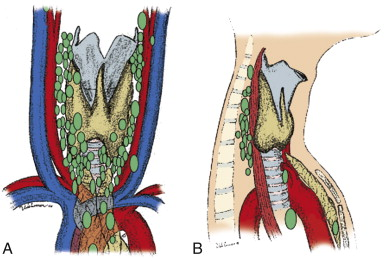
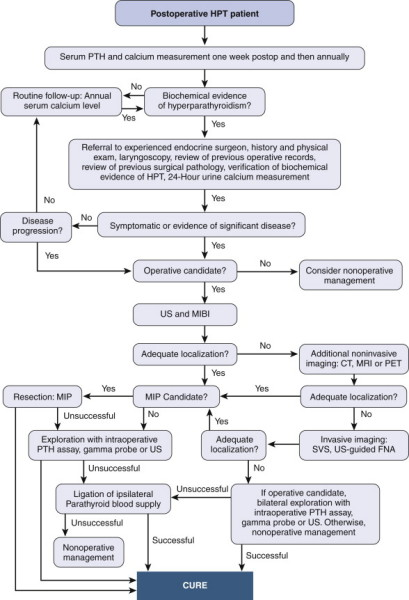

Primary Hyperparathyroidism
DEFINITION
High PTH levels, resulting in hypercalcaemia, as a result of
parathyroid tumours or hyperplasia
D E A B M I M
EPIDEMIOLOGY
Most common cause of hypercalcaemia.
Genetics
HPT occurs in virtually all patients with MEN1 and 25% of MEN2
'Jaw Tumour Syndrome':
- AD, hyperparathyroidism, fibromas of maxilla and mandible, kidney
(possible: polycystic, Wilm's, nephroblastoma)
'Familial isolated hyperparathyroidism':
- AD, may be a variant of MEN1 but with HPT only.
D E A B M I M
AETIOLOGY
1. Parathyroid Hyperplasia (5% or less; probably much
over-reported and prob 1.5%)
2. Parathyroid Adenomas (95%+)
-2x adenomas in up to 15% of pts
3. Parathyroid Cancer (<1%; over-reported; actually
extremely rare <<1%)
D E A B M I M
BIOLOGICAL BEHAVIOUR
See below
D E A B M I M
MANIFESTATIONS
Most patients are diagnosed incidentally during lab tests or
work-up for other diseases.
Hypercalcaemia:
Bone pain, osteopenia, joint pain.
Kidney stones
Constipation
Urinary frequency and incontinence
Pancreatitis
Fatigue, muscle weakness, difficulty concentrating
Nausea and vomiting
D E A B M I M
INVESTIGATIONS
PTH Values
Normal PTH 10-72 pg/mL (in Aus/NZ we use units 1-7)
- if Calcium elevated and PTH elevated (e.g. 92), then PTH (i.e. 9)
- if Calcium elevated and PTH normal (e.g. 49), then mild disease
definite as non-suppressed; quite common;
- if Calcium normal and PTH high (e.g. 81), then mild disease
probable (normocalcaemic hyperparathyroidism); need to do a
urinary calcium (only indication).
Note:
- Classic disease shows both elevated calcium and PTH = vast
majority of patients
- But may only have a high calcium or PTH on some days or testing.
- And many can have elevated calcium and normal but nonsuppressed
PTH
- PTH should be suppressed to NEAR ZERO if hypercalcaemia due to
another cause.
- 'mild' disease above probably not so mild and will strongly
benefit from surgery; just that Ca may not be dramatic on the
measured day
- Cancer suspected with very high levels (Ca grossly elevated and
PTH >300 pg/mL) (>30 here)
- beware pts with past gastric bypass or intestinal resection /
other GI disease who may be malabsorbing calcium; here physiological
response is elevated PTH to maintain Ca++, causing bone density
depletion; need supplements.
Familial hypocalciuric hypercalcemia
Is very very rare, your patient is extremely unlikely to have
this.
Asymptomatic, with high blood calcium and low urinary calcium
But note : a significant proportion of pts with hyperparathyroidism
will have low urinary calcium as well, and this is far more common /
likely diagnosis than FHH
--> if blood calcium is high and pth>4 then they have
primary hyperparathyroidism.
--> if blood calcium and high and pth is 2-4, then they still
probably have primary hyperparathyroidism
The only time you need to measure 24h calcium is if the calcium
is normal or perhaps only mildly elevated and pth <6
Even then, if urinary Ca is low, pt still very likely has PHP rather
than FHH, which is exceedingly uncommon
--> need a familial lineage / genetic test to diagnose FHH, and
that genetic test is often equivocal.
Vitamin D?
Most patients with PHP will have very low or low Vit D levels; some
will have normal.
Low vitamin D does not cause a high PTH or resultant
hypercalcaemia; does not happen.
Finding a low vitamin D makes the diagnosis of PHP more likely (and
in particular tumour); not less likely.
- physiological response to hypercalcaemia is to reduce Vit D to
reduce gut absorption of calcium
Don't go chasing secondary hyperparathyroidism due to low Vit D.
Calcium
Normal 2.1 - 2.5
PTH causes increase bone resporption, decreased bone calcium and
increased urinary Ca absorpotion.
Differentiation from Secondary Hyperparathyroidism
Response to hyperphosphataemia; leads to elevated PTH.
These patients generally have such severe renal dysfunction that
they are on dialysis.
Confusion arises because PHP can cause significant
deterioration in renal function; but if severe renal dysfx and on
dialysis for years then secondary.
Do not image for diagnostics
Sestamibi is not a diagnostic test but a pre-op localization test;
if negative it means nothing for diagnosis
D E A B M I M
MANAGEMENT
Indications for Surgery
Surgery is the only curative therapy for Primary HPT.
Any patient with features of HPT should be referred for surgery.
Asymptomatic?
Consensus guidelines recommend surgery for asymptomatic patients
with:
- reduced renal function (EGFR<60) or calculi
- osteoporosis (T score <-2.5 and <50y)
- serum calcium >3
But probably all should be offered surgery as there are
multiple benefits that may become apparent:
- better renal function and bone density improves; ALL pts will
develop osteoporosis
- neuropsychiatric symptoms
- QOL improves
- 10% reduction in survival duration if untreated
- increased cardiovascular complications
- low complications and lower cost than surveillance.
- natural history is worsening disease.
Also if peptic ulcer; consider MEN
--> all patients fit for relatively minor surgery should
undergo MIP
Risks?
RLN<1%
Failure 2% or so in the right hands
Haematoma or infection = 1% or less each in the right hands
Pre-Op Localization
The old adage is that the best localization study is an
experienced surgeon;
But all patients should still undergo imaging localization prior
to surgery
- note that localization studies should isolate the lesion;
patients with negative studies still have primary HPT
Algorithm:

70-75% will have +ve SPECT
--> proceed to minimally invasive surgery
- sestamibi retained in parathyroids a lot longer than thyroid;
- 12-25% FN rate, often unrevealing in hyperplasia, multiple
adenomas, coexisting thyroid disease
Negative SPECT;
--> proceed to USS; if positive, proceed to minimally invasive
surgery.
Jugular venous sampling is a highly
specialised procedure performed in some institutions
intra-operatively.
- USS guidance, retrieve blood from jugulars; sent
for PTH
--> if >10% difference, positive for
lateralizing.
--> can attempt minimally invasive
parathyroidectomy on that side.
Sometimes MRI can be helpful in recurrent disease.
Ultrasound

SPECT

Combined SPECT and USS modalities essential
SPECT alone may be confused for a thyroid nodule
USS will show any thyroid nodules
IF SPECT AND USS AGREE = 99% likely to be a parathyroid adenoma.
- USS may miss lesions deep in neck and in upper mediastinum
What if co-localization -ve?
Do a triple phase CT = parathyroid handles contrast differently
and will wash out differently cf thyroid tissue.
Word from Victoria Training Day
Eligible for MIP if:
- Primary HPT
- positive pre-op localization
- non-familial disease
You do not need:
- gamma probes (unless you're a high volume pro)
- intra-operative PTH
- nerve monitoring
- videoscopic
Instead, you need:
- experienced surgeon with good technique
- good radiology / nuclear med unit.
Intra-operative Adjuncts
1. Gamma-probe
- inject 10 mCi sestamibi 1h prior to surgery
- radioguided by hyperfunctioning glands that take
up and retain sestamibi longer than surrounding tissues.
- handheld gamma probe can localize and confirm
hyperfunctioning gland.
- scan for in-vivo counts higher than background,
resect, the recount; if 20% increase in count from resected tissue
then positive.
--> helpful for all patients, even those with
apparently negative sestamibi scans.
--> decreases operative failures and improves
operating time.
2. Intra-operative PTH
testing
Confirms all hyperfunctioning parathyroid tissue
excised.
PTH has a half life of only 2-4 minutes.
Turnaround time 8-20min.
- so after 5mins from
resection, PTH level should fall 50%.
Requires at least 4 samples (vs pre-incision or pre-excision)
- but if a 2nd hyperfunctioning gland is present,
then this will become clear and it will need to be found.
--> increases operative success
Minimally Invasive Parathyroidectomy
Preparation
Target lesion on imaging with unilateral exploration
Give 10 mCi Tc-99m sestamibi IV 1h pre-op
Second IV for blood sampling.
Steps
1. Place patient with neck extended, head ring, IV bag behind
shoulders.
- infuse local at Erb's point
2. Transverse incision below the cricoid (1.5-3cm)
- divide platysma transversely.
- no need to raise flaps.
3. Strap muscles separated vertically in the midline.
- muscles separated off thyroid
4. Thyroid rolled gently medially with a dissector
- may need to divide the middle thyroid vein if in the way
5. Scan with gamma probe
- find, then dissect off gland with a sharp clamp and divide its
vascular pedicle with a clip.
- send for frozen section to confirm parathyroid tissue
- (pros in high volume centres do not do frozen sections as they
don't need it for reassurance and maybe use gamma probes instead).
- e.g. see parathyroid.com
6. PTH levels from second peripheral IV 5,10,15 minutes
later
--> decrease of 50% from baseline is
confirmatory.
7. Close in layers with 2-0 vicryl / 3-0 vicryl then monocryl
8. Post-op PTH level in recovery to confirm
--> if does not fall, bilateral exploration indicated due to
small rate of having 2 adenomas.
Calcium
600 mg caltrate tds
- calcitriol 0.5mcg bd
reduced dose of calcium long term as osteoporotic
dormant parathyroids take a few weeks to recover.
Bilateral Exploration
Indications:
- PTH level does not fall after unilateral exploration
- localization studies were negative.
- suspected dual adenomas or 4-gland hyperplasia, e.g. MEN1
- surgeon or patient preference.
- some surgeons do this routinely.
Steps.
1. Incision as above (~3cm)
2. Gamma-probe and intraoperative PTH testing in same manner.=(?)
Inferior glands
Usually located just posterior to the inferior lobe
- and superficial and medial to the RLN
- within 2cm of where RLN crosses inf. thyroid artery
Sometimes found within the thyrothymic ligament or even thymus.
Superior gland
Frequently found posterior to the upper pole, just lateral to
the insertion of the recurrent nerve into the larynx.
- commonly on the tubercle of Zuckerkandl
- deep to RLN
How many glands?
80-90% have 4
4-20% have 5
1-4% have 3
<1% have 2,6, or 7
How big is a normal gland?
30-60mg ie pretty tiny
Hyperplasia?
Subtotal (3.5 gland) or total (reimplantation into forearm)
implicated
- prefer total and reimplantation of 5-10 pieces of 1-3mm in size
into non-dominant forearm muscle.
- or subtotal in older people
- can cryopreserve non-transplanted tissue in case needed
Patients with MEN1 and young patients with non-familial 4
gland disease.
Steps to Find a Missing Parathyroid Gland
1. Perform bilateral IJV sampling for PTH
2. Look into retroesophageal space
3. Perform cervical thymectomy
4. Open carotid sheath
5. Search for undescended gland, occasionally in undescended thymic
tissue.
6. Intra-operative USS of thyroid gland.
7. If gland still cannot be found, terminate the operation; leave
normal gland intact.
- never resect a normal gland.
- never perform a median sternotomy in absence of definitive
localization.
Locations:

Post-op Care
1. If total, then it takes 2-4w for glands to recover.
- Need oral calcium and calcitriol for 2-4 weeks.
2. Review at 1 week, obtain calcium and PTH levels.
- n.b. 20-25% will have elevated PTH with normal post-op calcium;
physiological adaption / reactionary secondary HPT.
--> fixed by vitamin D and calcium supplementation; serum Ca and
PTH after 6m
- (but persistent PTH and calcium = a worry for persistent disease;
below)
- all pts with elevated Calcium post-op should have 24h urinary
calcium measurements; <30 mg suggests benign familial
hypocalciuric hypercalcemia.
Cure is defined as normal serum calcium >6m post-op
3. Yearly serum calcium after successful parathyroidectomy, because
2-3% pts get recurrence.
Persistent / Recurrent
Hyperparathyroidism
Persistent HPT
Continuation or redevelopment of HPT within 6m of previous
surgery.
--> usually because original resection was inadequate.
- minimized by high-volume surgeons and adjuncts e.g. intraoperative
rapid PTH assay.
Recurrent HPT:
Development of HPT 6m+ after successful surgery
-- > due to development of hyperfunctioning parathyroid tissue
E.g. adenoma,
hyperplasia, carcinoma, parathyromatosis (seeding of aberrant
parathyroid cells after contamination of the operative field).
Less common than persistent disease, but frequent in familial HPT.
Algorithm for
management

Indications for Reoperation
Morbidity from high PTH / Ca includes:
Hypercalcaemia causes neophrolithiasis, which can damage the kidneys
Ostopenia, osteoporosis and pathological fractures.
Depression, emotional lability,
Careful evidence of bone resorption and neurocognitive symptoms
--> improve following successful surgery.
Indications include:
- Ca++ >0.25mmol/L above normal.
- creat clearance <60 mL/min
- bone mineral density T <2.5 at any site or prevoius fragility
fractures
- age <50
- unable to comply with biannual surveillance
Supernumerary glands
Remember that supernumerary glands are present in 8% of the
population.
- normal glands can also occur in ectopic locations:
- mediastinum / thymus, carotid sheath, adjacent to cervical
vertebral bodies, within thyroid gland.
Operative Principles
1. High volume surgeons = better outcomes.
2. Full personal, family and medical history
3. Confirm biochemistry.
4. Preoperative localization.
- US and MIBI
+/- FNA; if aspirate PTH > 1000 pg/mL, confirmative; helps
planning
- MRI and CT also useful in remedial cases.
--> be cautious if cannot localize the gland.
D E A B M I M
REFERENCES
Cameron 10th